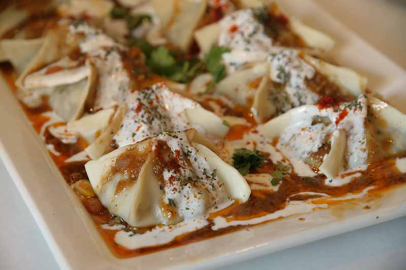
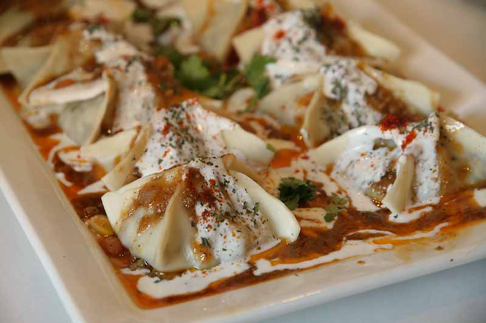

Welcome to the Recipe of Afghan Foods
Explore Deliciouse Afghani food for every occasions!
Recipe of the Day: Mantu
The iconic Afghan combines of spiced ground meat and onions, topped with tomato sauce and garlic yogurt.
Explore Deliciouse Afghani food for every occasions!
The iconic Afghan combines of spiced ground meat and onions, topped with tomato sauce and garlic yogurt.
